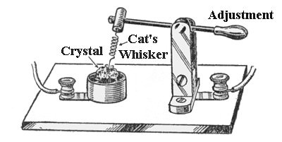
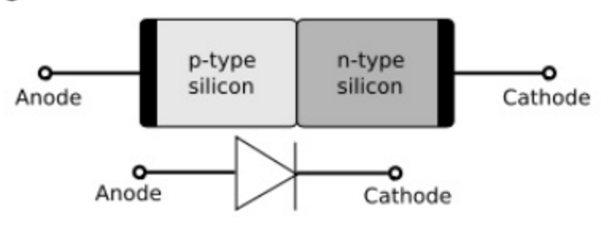
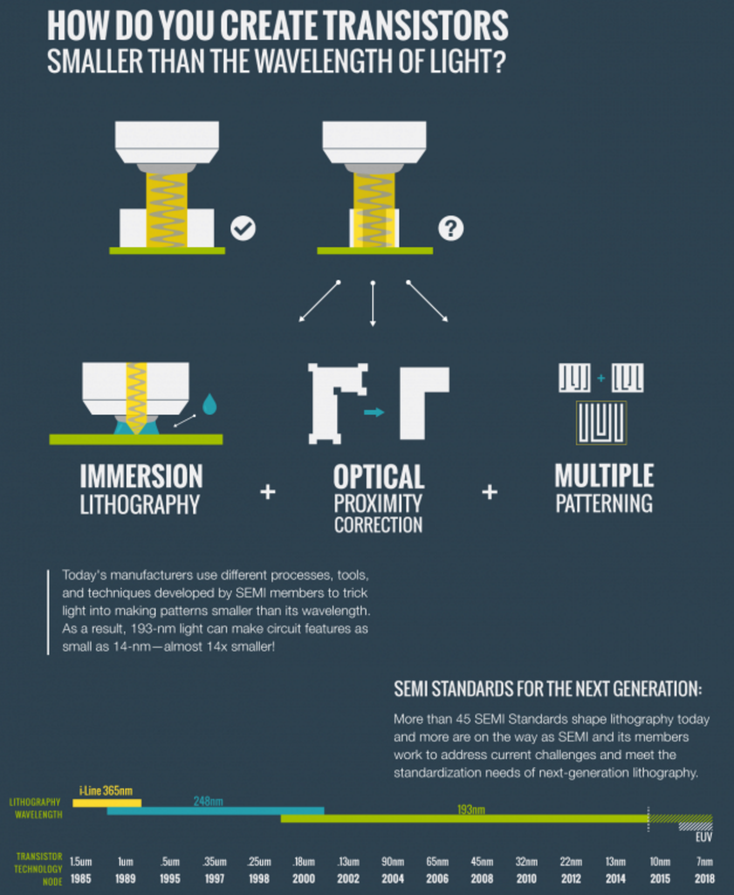
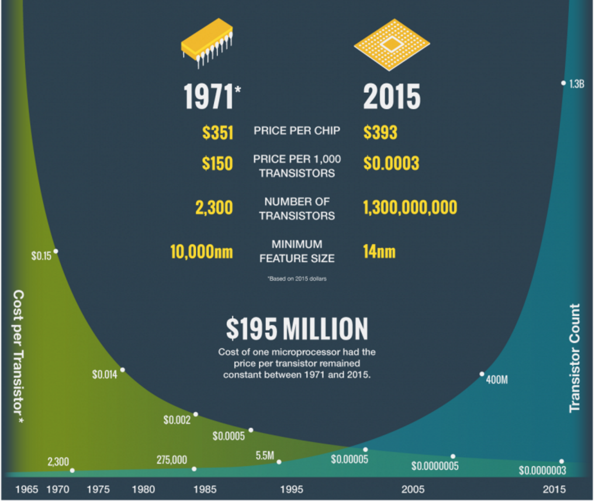

What's a Transistor?

This?

This?

This?
This one

Bell Labs, 1947
So What?

they're in everything:
cars
phones
toys
lightbulbs
toothbrushes
software runs on CPUs, made of transistors...
millions of them
What are they?
diode
diode

bipolar

1951
FET/MOS

idea patented in 1925, first manufactured in 1959 @ bell labs
inversion

Where do you get such wonderful toys?

Ever shrinking features
Shrinkage
Shrinkage
| 10 µm 1971 | 6 µm 1974 | 3 µm 1977 | |
| 1.5 µm 1982 | 1 µm 1985 | 800 nm 1989 | |
| 600 nm 1994 | 350 nm 1995 | 250 nm 1997 | 180 nm 1999 |
| 130 nm 2001 | 90 nm 2004 | 65 nm 2006 | 45 nm 2008 |
| 32 nm 2010 | 22 nm 2012 | 14 nm 2014 | 10 nm 2017 |
| 7 nm ~2020 | 5 nm ~2023 |
OMG expensive

CMOS

Frank Wanlass 1963
Logic Synthesis

Modeling
FET small signal equivalent circuit


FET modeling of IdVd

FET modeling

statistical modeling

physical limits of scaling

“even with super-aggressive efforts, we'll get to the 2–3-nanometre limit, where features are just 10 atoms across. Is that a device at all?” - Paolo Gargini
the dimnesions we're talking about

FET actual cross section

full stack chip cross section